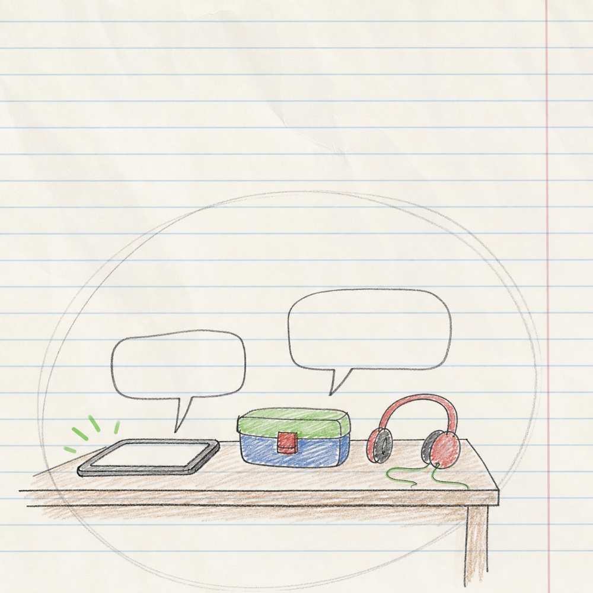
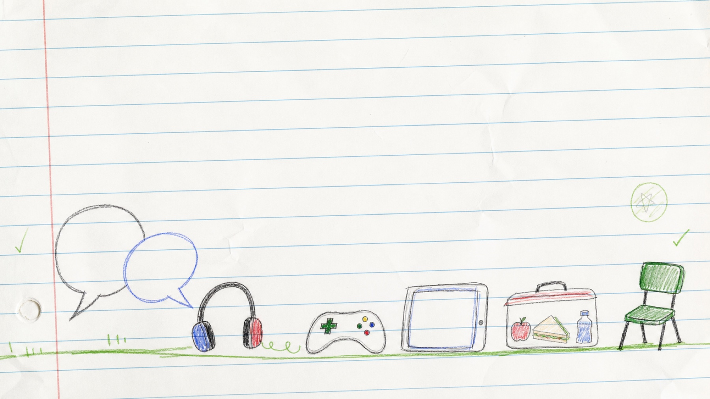
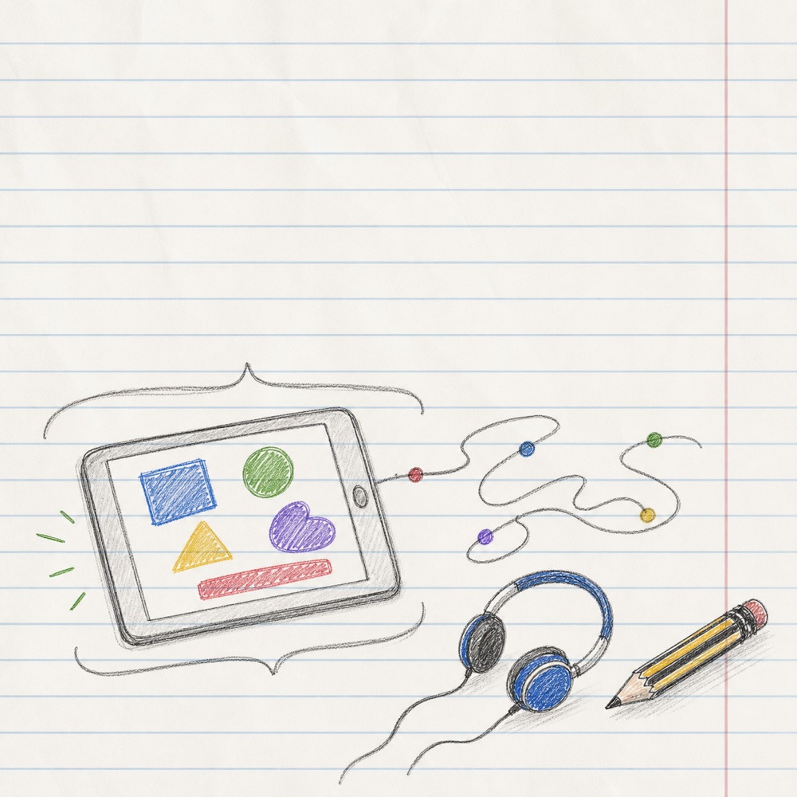
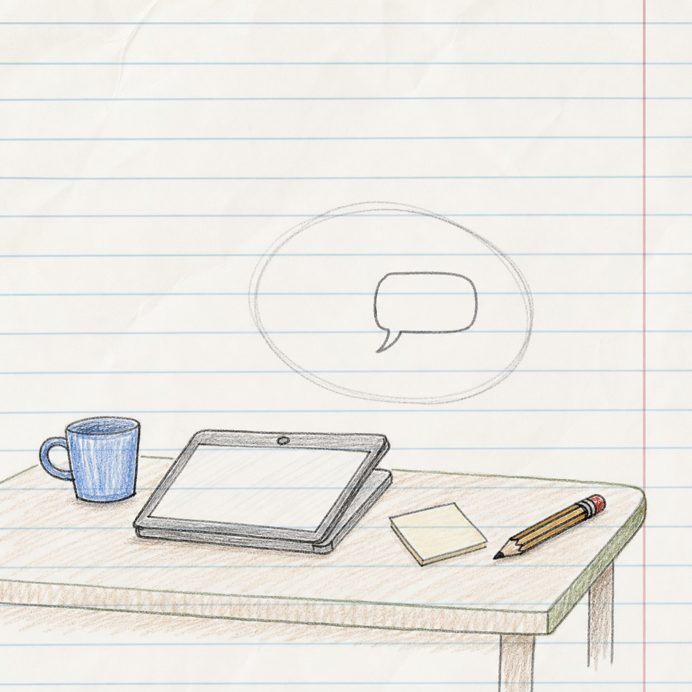
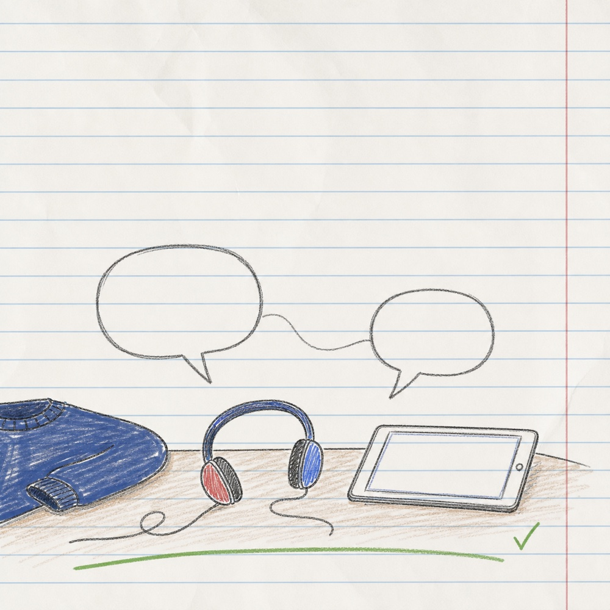
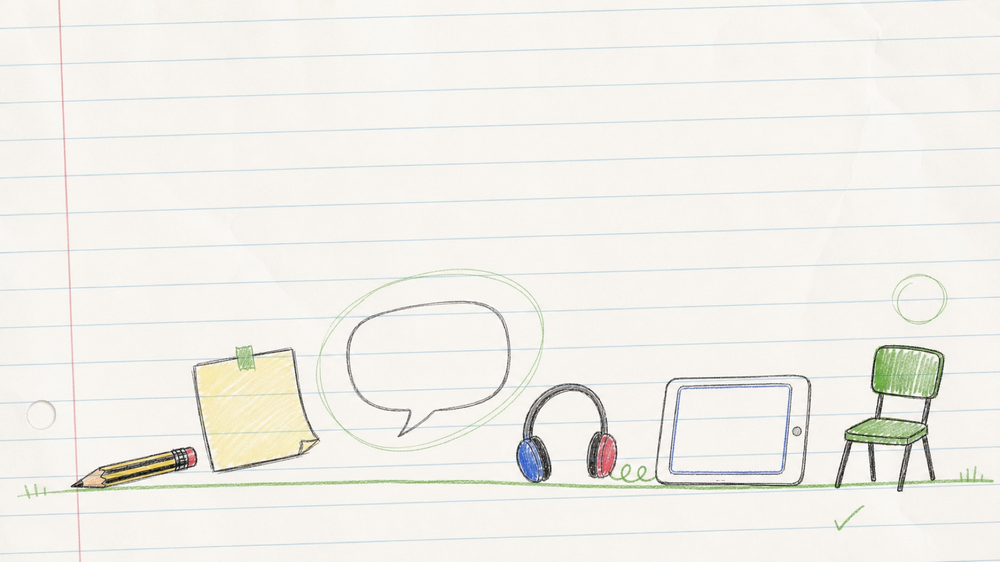

One morning...
Maya walks into class talking excitedly about a game she played last night.
Week 1
Week 1 connects KCSIE 2025, updated in September 2025, with NSPCC Learning online safety training. It starts with a simple premise: children's online lives are part of everyday life.

Story
NSPCC recommends opening up communication channels by taking an interest in children's positive online activities.

Maya walks into class talking excitedly about a game she played last night.

A member of staff hears the name of the game but does not recognise it.

The class is about to start. The adult could move things along, or pause for one calm question.

The teacher asked: “What do you like about it?”
Notice
What could an adult notice in this moment?
Guidance
KCSIE 2025, updated in September 2025, places online safety within safeguarding and highlights the importance of staff identifying concerns early. NSPCC guidance supports regular, open conversations about children's online lives.
These conversations help build trust and make difficult topics easier to raise later. NSPCC Learning's online safety training and school guidance frame this as part of a whole-school safeguarding approach.
Try

Ask one pupil:
“What’s your favourite thing to do online?”
You do not need to know the platform. The aim is simply to show interest and make online life easier to talk about.
“What creative things do you do online?”
“What kinds of games do you like?”
Reflect
Use these questions to make a note for yourself.
Where could these kinds of conversations naturally happen in your school day?
Are there particular children who might have online lives that they do not discuss with adults?
What are the benefits of open communication channels about children's online lives?
Small conversations build trust. Try one low-pressure question this week.